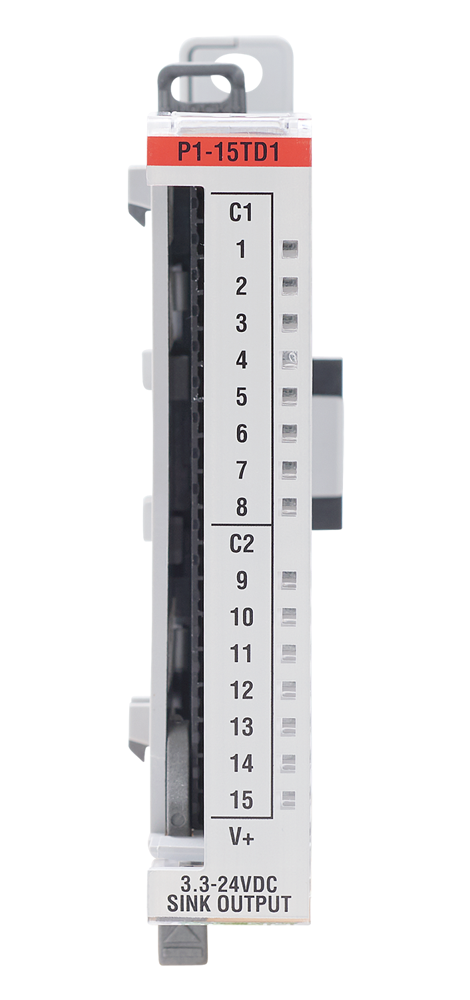

Note: While this module only has 15 output channels, you can still write to channel 16. However, it will have no
functional purpose.
This function writes the state of a single channel.
P1.writeDiscrete(HIGH,1,2); // Turn on slot 1 channel 2This function writes the state of all 15 channels. It turns channels 1-14 on and turns channel 15 off.
P1.writeDiscrete(0x3FFF, 1); // Write state of all channels for slot 1Compatible Functions
Module Configuration and Status Tables
This module does not provide any status data and does not require configuration.

Channels: 15
Discrete Output Type: Sinking
Rated Output Voltage: 3.3–24 VDC
Example: DiscreteOutput
Additional Resources:
Data Sheet
P1-15TD1 on AutomationDirect.com